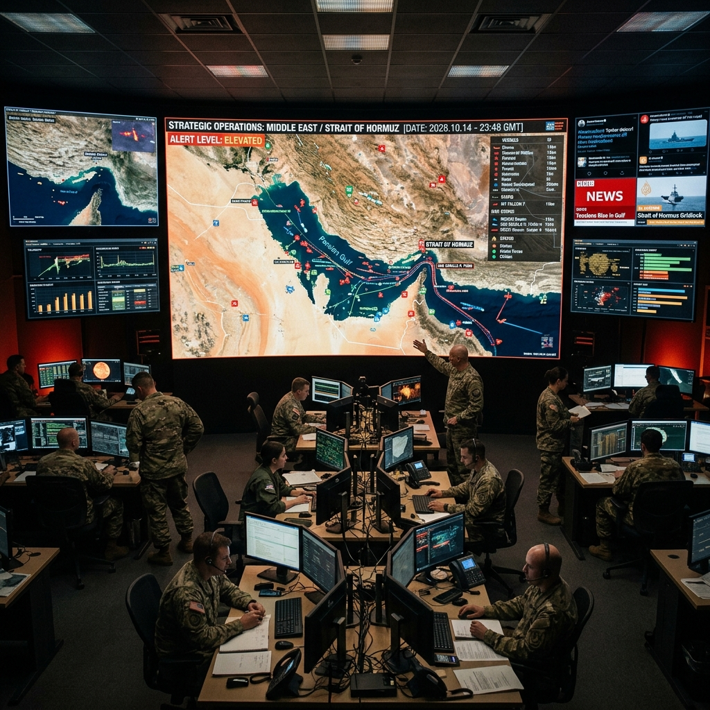

Monitoring the USA-Iran Conflict: Real-Time Multi-Stream Intelligence

The geopolitical landscape between the United States and Iran has reached a critical inflection point in March 2026, demanding a new level of real-time monitoring.
As tensions escalate across multiple domains—including diplomatic, military, and cyber-security—staying informed requires more than just checking a headlines feed once a day. The speed of modern conflict means that a single event, such as a naval encounter in the Persian Gulf or a cyber-attack on critical infrastructure, can alter the global security posture within minutes. To truly understand the evolving situation, an intelligence-led approach using multi-stream surveillance is the only way to build a comprehensive "Situational Report" (SITREP). This is where YoutubeMulti's ability to aggregate diverse information sources becomes an essential tool for analysts, journalists, and concerned citizens alike.
The Diplomatic Standoff: Analyzing the UN Security Council Sessions
The diplomatic theater has moved to the UN Security Council in New York, where tense sessions are currently exploring new sanctions and potential frameworks for de-escalation. These high-level meetings are often live-streamed, providing a direct view of the official positions of the US, Iran, and key third-party mediators like China, Russia, and the EU. To truly grasp the subtleties of these negotiations, you need to be able to see the live speeches alongside the "after-action" analysis from diplomatic experts.
Using YoutubeMulti, you can dedicate a primary tile to the UN TV live feed while simultaneously monitoring secondary feeds from global news agencies like Al Jazeera, the BBC, and Reuters. This side-by-side comparison allows you to spot discrepancies in translation or reporting and see how different regions are interpreting the same diplomatic statements. The "Multi-Stream Edge" here is total situational awareness of the official narrative as it's being constructed in real-time. This level of transparency is vital for anyone following the potential for a peaceful resolution vs. the escalation of conflict.
Strategic Positioning: Identifying Flashpoints in the Strait of Hormuz
On the military front, the focus remains on the Strait of Hormuz—the world’s most important oil transit point. The concentration of naval assets from both the US and Iran in these narrow waters creates a constant risk of miscalculation. Monitoring live "ship-tracking" dashboards alongside official naval briefings and social media reports from the region is the only way to track these movements accurately. A single news report might describe a "naval encounter," but seeing the AIS (Automatic Identification System) data alongside the live satellite imagery tells a much more detailed story.
YoutubeMulti allows you to build a dedicated "Strategic Flashpoints Grid." One tile for a live ship-tracking website, another for independent naval analysis channels on YouTube, and a third for the latest official Pentagon or IRGC briefings. This allows you to verify military claims against raw data. For example, if a report of a coastal missile battery deployment emerges, you can cross-reference the reported location against the latest open-source intelligence (OSINT) community maps. This "crowd-sourced intelligence" approach is the future of geopolitical monitoring.
Information Warfare: Vetting Cyber-Attack Claims and Viral Propaganda
In 2026, the first shots of a conflict are often fired in cyberspace. Both the US and Iran have highly sophisticated cyber-capabilities, and the current tensions have seen a surge in reported activities—from "zero-day" exploits targeting energy grids to widespread "disinformation" campaigns on social media. Distinguishing between a genuine state-sponsored attack and viral propaganda is one of the most difficult challenges for modern observers. The goal of many of these campaigns is to sow confusion and domestic instability.
To combat this, you need an "Information Verification Dashboard." Stacking independent cyber-security live-feeds (like those from Mandiant or CrowdStrike) alongside official government cybersecurity alerts and the latest social media trending topics helps you filter the signal from the noise. If a "viral video" claiming a major explosion appears, you can use your multi-stream setup to check it against local live-cams, official emergency services reports, and debunking feeds from established fact-checkers. This "digital verification" is the only shield against the modern art of information warfare.
Geopolitical Monitoring with YoutubeMulti: Building Your SITREP Grid
A geopolitical conflict of this magnitude is a high-information, high-consequence event. Between the official press conferences, the clandestine leaks, and the "fog of war" that inevitably follows a military escalation, there is too much data for a single screen. YoutubeMulti allows you to build a professional-grade "Strategic Operations Center" (SOC) for personal monitoring.
How to Build Your "War Room" Dashboard
- Tile 1: Live Official News: A feed from a reputable global news agency for the baseline narrative.
- Tile 2: Diplomatic Feeds: The UN TV live stream for direct speeches and resolution voting.
- Tile 3: OSINT Analytics: A YouTube channel or live-board dedicated to Open Source Intelligence analysis of satellite imagery and transit data.
- Tile 4: Economic Impact: A live dashboard of oil prices, currency fluctuations (especially the Rial vs Dollar), and global market indices.
- Tile 5: Local Perspectives: Monitor social media feeds from both Iranian and US-based "citizens on the ground" for an unfiltered (though often biased) view of the domestic atmosphere.
Looking Ahead: The Role of Third-Party Mediators and Global Stability
The path forward for the USA-Iran conflict remains uncertain. The role of third-party mediators, such as Switzerland or Oman, will be crucial in the coming weeks. Whether the situation leads to a new "Grand Bargain" or a regional escalation depends on the willingness of all parties to engage in genuine de-escalation. The global community is watching closely, knowing that the stability of the entire Middle East—and by extension, the global economy—is at stake.
To stay informed during the potential negotiations, building a "Peace Monitoring Grid" is the best approach. Tracking the movements of diplomatic planes, the schedules of high-level summits, and the subtle "trial balloon" statements released in state-controlled media allows you to spot the early signs of a breakthrough. The era of the "armchair diplomat" is over; the era of the "multi-stream geopolitical analyst" has arrived.
Conclusion: The Importance of Real-Time Intelligence
The 2026 tensions between the US and Iran are a stark reminder of the complexity of modern geopolitics. It is a story of three dimensions—physical, diplomatic, and digital. By utilizing advanced tools like YoutubeMulti, you can ensure that you are never caught off-guard by the rapidly changing situation. Don't just read the headlines—monitor the data, analyze the strategies, and experience the unfolding of history in real-time. The era of total situational awareness is here.